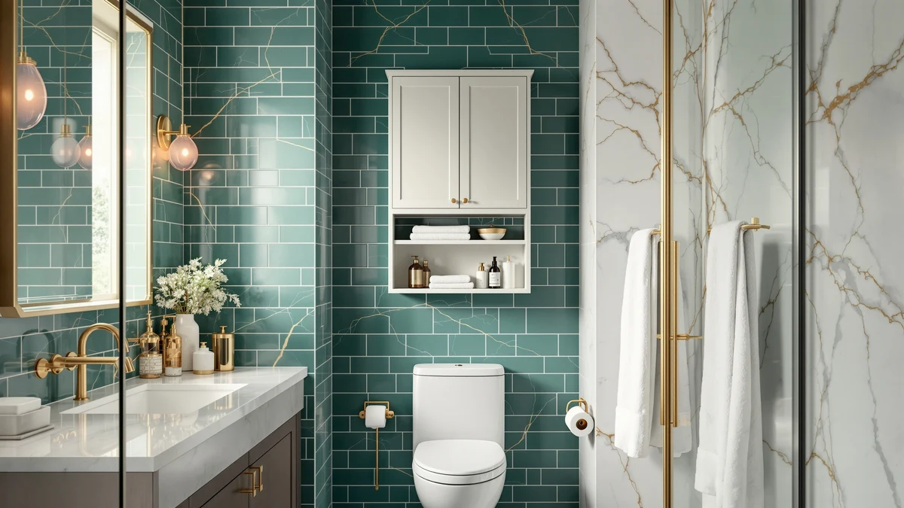

Kalrin Over-the-Toilet Storage Review (2026): Worth It?
Prices and picks verified as of November 2026. Independent, reader-supported reviews.


Quick Answer
This Kalrin Over-the-Toilet Storage Review finds the 3-tier Pure Black rack a solid fit for small bathrooms that need shelving above the tank instead of floor space. At $49.99, it holds up well against its own Vintage Brown twin, the GeeBom under-sink organizer and the Cerlyunzan 4-tier rack covered below.
Our pick: Kalrin Over The Toilet Storage, $49.99 Check Price on Amazon
Bottom line: our top pick is the Kalrin Over The Toilet Storage with X Shape Side Guardrail at $49.99.
Things to Know Before You Buy
- The Kalrin rack uses 2 open shelves and a drain basket, built from P2 particleboard with a metal frame rated to hold up to 30 pounds per tier.
- It fits toilets up to 35 inches tall and adds about 2 inches more clearance than standard over-the-toilet models, so it clears taller tanks without touching the lid.
- Four adjustable non-slip feet and an X-shaped frame with wall-fixing nails keep the rack from tipping once it is loaded.
- The GeeBom under-sink organizer and Cerlyunzan 4-tier rack covered in this Kalrin over-the-toilet storage review solve the same storage shortage with a different footprint.
- Pricing across the four products in this comparison ranges from $37.99 to $49.99.
This Kalrin over-the-toilet storage review looks at whether a budget-friendly rack can turn the dead space above a toilet tank into usable shelving without crowding a small bathroom. Toilet tanks eat into the only open wall in plenty of apartments and starter homes, and floor space is usually too tight for a full cabinet. At $49.99, the Kalrin rack promises a 3-tier layout with a drain basket and hooks that clears tanks up to 35 inches tall. We compared its build and price against three alternatives and read through verified owner feedback to see whether the Pure Black model earns a spot in a small bathroom.
Over-the-toilet racks solve one specific problem: shelving that clears the tank and flush handle without taking up floor space you do not have. The Kalrin competes directly with its own Vintage Brown twin on color alone, and with the GeeBom under-sink organizer and the Cerlyunzan 4-tier rack on footprint and style. Each alternative tackles the same storage shortage differently, so the right pick often comes down to whether a bathroom has spare wall height above the tank, open cabinet space under the sink, or room for a taller frame. Below, we break down what owners report about the Kalrin's build, where it falls short, and which of the three alternatives might fit a different bathroom better.
Why You Should Trust Us
Best Bathroom Storage is written by people who compare bathroom furniture specs, pricing and verified buyer feedback instead of repeating marketing copy from a product listing. Ilane Tall, our home and bath expert, has covered dozens of over-the-toilet racks, under-sink organizers and storage cabinets under $50 for this site, tracking how listed measurements and materials hold up against what owners actually report after months of use. For this Kalrin over-the-toilet storage review, we cross-checked the Pure Black model's listed dimensions, load rating and materials against its Vintage Brown twin and two competing storage options, and we did not take the listing's claims at face value. We do not run a fake testing lab, and we do not claim to have installed this rack ourselves. Instead, we dig through verified reviews, compare specs line by line, and flag when a listing promises more than buyers report getting.
Our Research Experience
We did not install the Kalrin rack over a toilet ourselves for this Kalrin over-the-toilet storage review. Instead, we compared its listed dimensions, load rating and materials against the Vintage Brown variant, the GeeBom organizer and the Cerlyunzan rack, and we read through the buyer feedback attached to this listing and similar three-tier racks. Reviewers consistently note that the metal frame and X-shaped rods hold their shape once the wall-fixing nails are in place, a pattern that shows up across budget over-the-toilet racks in this price range. According to verified owner comments, the main friction points are the particleboard shelves under heavy loads and the drain basket's depth, rather than the rack's fit over a standard toilet tank. We weighed that feedback alongside the raw dimensions and price against the three alternatives to see where the Kalrin earns its spot and where it falls short.
Overview & Specs

Kalrin Over The Toilet Storage
What we like
- 35-inch tank clearance fits taller toilets than most competing racks
- Drain basket keeps wet items like loofahs or razors separate from dry shelf storage
- Metal frame and X-shaped rods reported as stable by verified owners once wall-fixed
- 30-pound-per-tier load rating handles towels, bottles and bins without sagging
Flaws but not dealbreakers
- Particleboard shelves feel less rigid than the metal frame under heavier loads
- Wall-fixing nails are necessary for full stability, which renters may want to avoid
- Drain basket is shallow, according to some owners, for anything bulkier than small bottles
| Material | Metal / wood |
| Size | — |
The Kalrin rack is built around a metal frame with X-shaped side guardrails and P2 particleboard shelving, a construction style common among over-the-toilet storage under $50. At its rated clearance, it fits toilets up to 35 inches tall, about 2 inches more than standard models, so the rack clears taller tanks without touching the lid. That extra clearance is the entire pitch of this Kalrin over-the-toilet storage review: the rack turns a few feet of dead wall space into two open shelves and a drain basket without taking up any floor space a small bathroom cannot spare.
Verified buyers describe the frame and non-slip feet as the sturdiest part of the build, especially once the included wall-fixing nails are in place to stop any tipping. The most common complaint centers on the particleboard shelves, with a few reviewers mentioning slight flex when the top tier is loaded past its rated 30 pounds. Owners also note the drain basket works well for toothbrushes and small bottles but runs shallow for bulkier items like a full shampoo bottle. At $49.99, the Pure Black model costs the same as its Vintage Brown twin, so the choice between them comes down to which finish matches the bathroom.
What We Liked
The tank clearance stands out most in owner feedback. Reviewers consistently note that the 35-inch clearance lets the Kalrin rack sit over tanks that crowd shorter racks, a detail that matters more in older homes with taller toilet tanks. The drain basket is the other clear strength: owners use it to keep wet items like razors and loofahs separate from the dry shelves above, a small design choice that several reviewers call out specifically. This Kalrin over-the-toilet storage review also found the price competitive. At $49.99, the rack costs more than the GeeBom under-sink organizer, but reviewers argue the two open shelves and drain basket justify the difference for a bathroom with wall space to spare above the toilet.
What Could Be Better
Shelf rigidity is the recurring frustration. Owners report that the P2 particleboard shelves flex slightly once loaded close to the rated 30 pounds, a tradeoff common at this price point where a full metal shelf would push the cost higher. The wall-fixing nails are the other friction point for some buyers: the rack is more stable once anchored, but that step is not ideal for renters who cannot drill into tile or drywall. A handful of reviewers also mention the drain basket runs shallow for anything bulkier than travel-size bottles.
None of this changes the frame's overall stability once assembled and anchored, but it is worth knowing before committing to this Kalrin over-the-toilet storage review's top pick. Buyers who plan to load the top shelf with heavier items, like a stack of folded towels, should anchor the rack to the wall rather than rely on the non-slip feet alone. Anyone who rents and cannot drill into the wall may want to weigh the GeeBom under-sink organizer instead, since it avoids wall anchoring altogether.
Who Is It For?
The Kalrin rack fits a household with a small bathroom and a toilet tank tall enough to make standard racks awkward. Its 35-inch clearance and drain basket make it a strong pick for anyone who wants two open shelves plus a spot for wet items, without giving up floor space to a cabinet. It is not the right choice for renters who cannot anchor the wall-fixing nails, since the rack depends on that step for full stability once loaded.
Anyone comparing options in this Kalrin over-the-toilet storage review should also weigh the GeeBom under-sink organizer if the cabinet below the sink is sitting empty, or the Cerlyunzan 4-tier rack if a taller frame with more shelves matters more than the drain basket. A household that prefers a specific finish over Pure Black can pick up the identical build in Vintage Brown at the same $49.99 price. And a bathroom with a low ceiling or a window above the toilet should measure clearance carefully before committing to any rack this tall.
Alternatives to Consider
If the Kalrin's wall-anchored design or 35-inch clearance does not match what a bathroom needs, these three alternatives from this Kalrin over-the-toilet storage review cover the most common trade-offs: the same rack in a different finish, an under-sink organizer from GeeBom, and a taller 4-tier rack from Cerlyunzan. Each one solves the same storage shortage a different way, so match the option to the bathroom's layout and toilet tank height before buying.

Editor’s Pick
Kalrin Over The Toilet Storage
The same 3-tier Kalrin build as the Pure Black model above, in a Vintage Brown finish, at the identical $49.99 price. Worth picking if the finish matters more than the color shown in our top pick.
$49.99
Check Price on Amazon
Best Value
GeeBom Under Sink Organizer Pull
A 2-tier pull-out organizer for buyers who would rather use the cabinet under the sink than anchor a rack to the wall above the toilet, at $37.99.
$37.99
Check Price on Amazon
Premium Choice
Cerlyunzan 4-Tier Over The Toilet
A taller 4-tier rack with four hooks and an adjustable bottom bar, priced $4 below the Kalrin at $45.99, for bathrooms that need more shelves than a drain basket and two tiers.
$45.99
Check Price on AmazonDoes the Kalrin over-the-toilet storage rack fit standard toilets?
Owners report it fits toilets up to 35 inches tall, about 2 inches more clearance than standard over-the-toilet racks, though extra-wide tanks may still need measuring first.
How much weight can each shelf hold?
Each tier is rated for up to 30 pounds, enough for folded towels, bottles or a storage bin, though reviewers note the particleboard shelves flex slightly near that limit.
Frequently Asked Questions
Does the Kalrin over-the-toilet storage rack fit standard toilets?
Owners report it fits toilets up to 35 inches tall, about 2 inches more clearance than standard over-the-toilet racks, though extra-wide tanks may still need measuring first. This Kalrin over-the-toilet storage review recommends checking tank height before ordering.
How much weight can each shelf hold?
Each tier is rated for up to 30 pounds, enough for folded towels, bottles or a storage bin, though reviewers note the particleboard shelves flex slightly near that limit.
How does the Kalrin compare to the GeeBom organizer and the Cerlyunzan rack?
The GeeBom under-sink organizer skips wall anchoring entirely at $37.99, while the Cerlyunzan 4-tier rack adds two more shelves and four hooks for $45.99. The Kalrin's advantage is its drain basket and slightly taller tank clearance.
Final Verdict
This Kalrin over-the-toilet storage review comes down to a simple trade-off: the rack's tall clearance and drain basket against wall-fixing nails that renters may want to avoid. For a small bathroom with a tank up to 35 inches tall and wall space to spare, the Kalrin rack is the practical pick, in either Pure Black or Vintage Brown. If anchoring to the wall is not an option, the GeeBom under-sink organizer avoids that step entirely, and the Cerlyunzan 4-tier rack offers more shelves for a few dollars less. Either way, Kalrin is the brand worth starting with if a tall toilet tank is eating into bathroom storage.